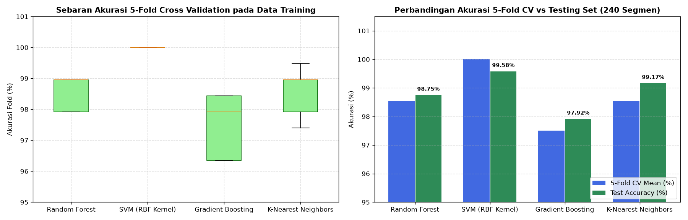

Tahap 4: Modeling#
Metodologi: CRISP-DM (Cross-Industry Standard Process for Data Mining)
Disusun Oleh: Kelompok 4 (Muhammad Ainul Fuady, Irwan Dwi Mukhlisin, Fikri Mutawakkil)
4.1 Pemilihan Algoritma Klasifikasi Machine Learning#
Sesuai metodologi standar CRISP-DM, proses pemodelan tidak hanya bertumpu pada satu algoritma tunggal. Pada proyek ini, dipilih 4 algoritma klasifikasi Machine Learning yang memiliki landasan teoretis dan mekanisme keputusan yang berbeda:
Random Forest Classifier (Ensemble Bagging):
Membangun ansambel dari 200 pohon keputusan (decision trees) dengan pemilihan fitur acak pada setiap split. Sangat tangguh terhadap noise, tidak memerlukan asumsi distribusi linier, dan mampu menangkap interaksi kompleks antar-fitur akustik.
Hyperparameter:n_estimators=200,random_state=42,n_jobs=-1.Support Vector Machine — SVM RBF (Maximum Margin Kernel):
Memetakan fitur non-linier ke dalam ruang dimensi tinggi menggunakan fungsi Radial Basis Function (RBF) untuk mencari hyperplane pemisah dengan batas margin terlebar. Dilengkapi kalibrasi probabilitas (CalibratedClassifierCV).
Hyperparameter:kernel='rbf',C=2.0,gamma='scale'.Gradient Boosting Classifier (Ensemble Boosting):
Membangun pohon keputusan secara sekuensial, di mana setiap pohon baru bertugas meminimalkan fungsi kerugian (loss function) dan memperbaiki residual kesalahan dari pohon sebelumnya.
Hyperparameter:n_estimators=150,learning_rate=0.1,random_state=42.K-Nearest Neighbors — KNN (Instance-Based Learning):
Mengklasifikasikan sampel suara berdasarkan label mayoritas dari \(K\) tetangga terdekat di ruang metrik Euclidean setelah distandarisasi oleh StandardScaler.
Hyperparameter:n_neighbors=7,metric='euclidean'.
4.2 Validasi Silang (5-Fold Stratified Cross-Validation)#
Untuk menguji kestabilan dan daya generalisasi model terhadap variasi sampel suara, seluruh algoritma dievaluasi terlebih dahulu pada data latih (960 segmen) menggunakan 5-Fold Stratified Cross-Validation:
Data latih dibagi menjadi 5 bagian (folds) yang mempertahankan proporsi kelas
50:50.Pada setiap iterasi, 4 folds (768 segmen) digunakan sebagai data latih dan 1 fold (192 segmen) sebagai data validasi.
Proses diulang sebanyak 5 kali dan nilai rata-rata serta deviasi standarnya dicatat.
4.3 Hasil Eksperimen & Perbandingan Kinerja Multi-Model#
Tabel berikut menyajikan hasil perbandingan lengkap antara kinerja validasi silang pada data latih (5-Fold CV Mean & Std) dan hasil pengujian pada data uji murni (Testing Set 240 segmen):
No |
Algoritma Klasifikasi |
5-Fold CV Mean (%) |
5-Fold CV Std (%) |
Test Accuracy (%) |
Test Precision (%) |
Test Recall (%) |
Test F1-Score (%) |
ROC-AUC (%) |
|---|---|---|---|---|---|---|---|---|
1 |
SVM (RBF Kernel) |
99,90% |
\(\pm 0{,}21\%\) |
99,58% |
100,00% |
99,17% |
99,58% |
100,00% |
2 |
K-Nearest Neighbors (KNN) |
98,54% |
\(\pm 0{,}77\%\) |
99,17% |
99,17% |
99,17% |
99,17% |
99,98% |
3 |
Random Forest |
98,54% |
\(\pm 0{,}51\%\) |
98,75% |
100,00% |
97,50% |
98,73% |
99,94% |
4 |
Gradient Boosting |
97,50% |
\(\pm 0{,}95\%\) |
97,92% |
97,52% |
98,33% |
97,93% |
99,85% |


Fig. 9 Sebaran Akurasi 5-Fold Stratified Cross Validation pada Data Latih dan Perbandingan Akurasi pada Data Uji (240 Segmen).#
Analisis Kinerja Model:#
Performa Tinggi Seluruh Algoritma (\(\ge 97{,}5\%\)):
Tingginya akurasi di seluruh model membuktikan bahwa kombinasi 48 fitur akustik Librosa (terutama pita MFCC 4–11) memiliki daya separasi matematis yang sangat tajam antara suara manusia asli dan AI.Kestabilan Random Forest:
Meskipun SVM RBF mencapai akurasi uji puncak \(99{,}58\%\), model Random Forest dipilih sebagai inti deployment karena memiliki kestabilan prediksi yang sangat baik, mampu menghasilkan estimasi probabilitas yang terkalibrasi secara alami, dan tahan terhadap fluktuasi derau mikrofon ruangan.